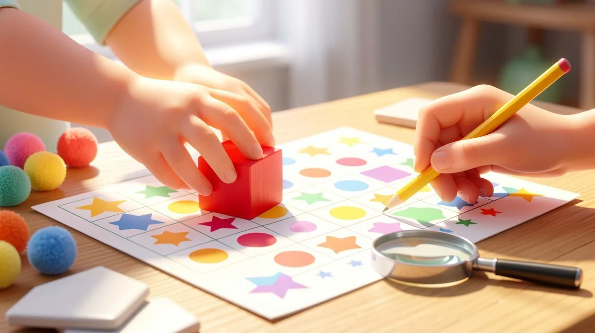
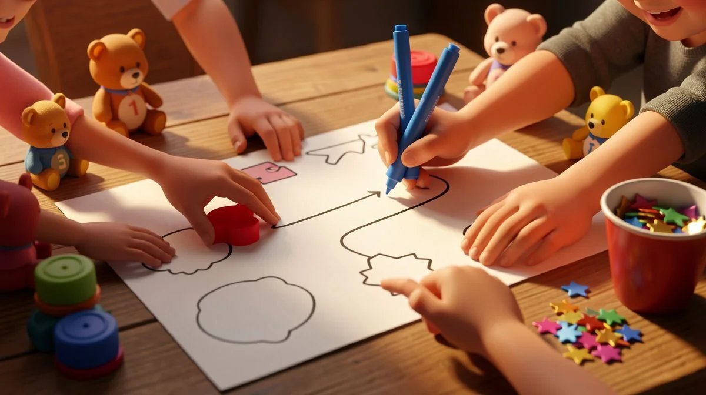
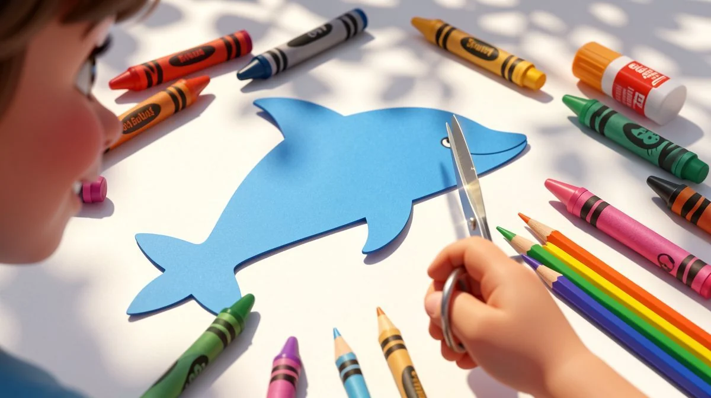
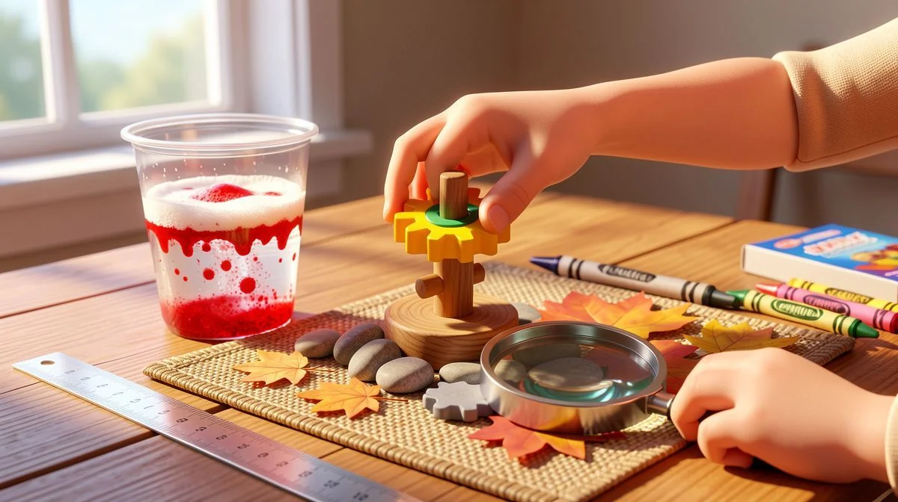
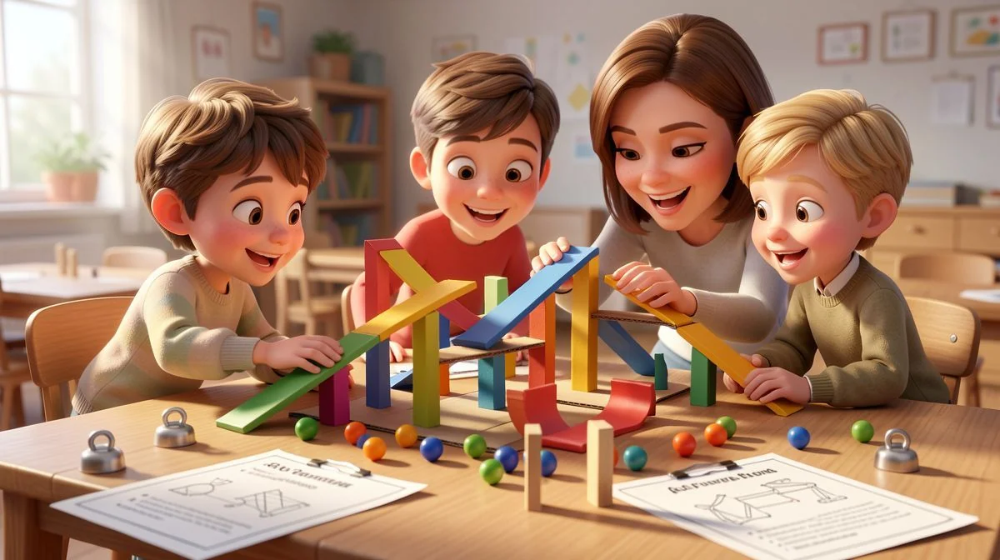

📑 Table of Contents
- Why After School Activities Are Essential for Child Development
- Best Cognitive Skills Activities for Different Age Groups
- Top Fine Motor Skills Development Activities That Kids Love
- How to Create Age-Appropriate Learning Activities at Home
- Ultimate Hands-On Learning Projects for Brain Development
- Proven Classroom Activities That Work Perfectly After School
Why After School Activities Are Essential for Child Development
Let me be honest. When the final bell rings, the last thing most kids want is more "learning." I get it. But here's the thing I've learned in fifteen years of teaching: the magic happens when they don't even realize it's happening. Those hours after school aren't just a gap to fill.
They're a golden opportunity. A time for a different kind of growth that structured classroom time can't always provide. When it comes to best after school activities for brain development, parents have many great options.
The Science Behind Brain Development Windows
Think of a child's brain like a network of roads being built. From ages 4 to 12, it's peak construction season. Neural pathways are forming at a staggering rate. Every new experience, every solved puzzle, every mastered skill is like paving a new road or widening a highway. Activities that challenge both sides of the brain—like learning an instrument or solving a logic puzzle—are especially powerful.
They build bridges between hemispheres. This isn't just theory. It's the concrete foundation for all future learning.
Miss this window? It's harder to build those roads later. Not impossible, but harder. This is especially helpful for best after school activities for brain development.
How Structured Play Differs from Free Play
Now, don't get me wrong. Free, unstructured play is vital. It's for creativity, negotiation, and pure joy. But structured play has a secret mission. It's play with a purpose. It introduces gentle challenges just beyond a child's comfort zone. There's a goal. Maybe it's following recipe steps to bake cookies (hello, math and sequencing!) or building a specific model with blocks.
Free play is exploring the forest. Structured after-school activity is learning to use a map and compass within it. Kids need both.
Building Executive Function Skills After School
This is the big one. Executive function is our brain's air traffic control system. It manages focus, impulse control, working memory, and flexible thinking. School demands it, but after-school time is where we can really practice it without the grade pressure. This is especially helpful for best after school activities for brain development.
Take a simple activity like a scavenger hunt with clues. A child has to remember the clues (working memory), ignore distractions to find the next item (focus), and adjust their plan if something isn't where they thought (flexible thinking). A 2023 study showed kids in quality after-school programs improved working memory by 28% more than their peers. That's huge. It translates directly to better homework focus and classroom behavior.
For my littlest friends, ages 4-6, we start tiny. A 15-minute session sorting colored buttons or putting story pictures in order. The goal isn't perfection. It's practicing that "focus muscle." We build it gradually.

"The after-school program didn't just give my son something to do. It taught him how to think through a problem without giving up in frustration. That patience shows at home now, too." – Mark, parent of a 2nd grader.
Honestly, the right best after school activities for brain development do more than teach a skill. They wire the brain for resilience. For more age-specific activity ideas that build these exact skills, I've put together some free downloadable resources you can start using tonight.
Best Cognitive Skills Activities for Different Age Groups
One size never fits all in education. What lights up a six-year-old's brain will bore a ten-year-old silly. The key is matching the challenge to the child's developmental stage. Here’s a breakdown of what works, and why, based on what I see every day in the classroom.
Ages 4-6: Building Foundational Thinking Skills
Keep it short, sweet, and sensory. At this age, thinking is tied to touching and doing. We're laying the groundwork for logic.
- Pattern Power: Use blocks, beads, or even snacks. Start a simple pattern (red, blue, red, blue...) and ask "what comes next?" This is early sequencing and prediction.
- Memory Match: Start with just 6-8 cards face down. Turn two over at a time to find pairs. It’s a classic for a reason—it builds visual memory and concentration.
- Sorting Games: Give them a mixed pile of buttons, coins, or LEGO bricks. Ask them to sort by color, size, or type. It teaches categorization, a fundamental cognitive skill.
I use variations of these daily in my kindergarten classroom. The goal is engagement, not endurance. Fifteen minutes of focused fun beats an hour of drudgery.
Ages 7-9: Developing Problem-Solving Abilities
Now we shift. Kids are reading, their world is expanding, and they're ready for a real challenge. They want to crack a code.
This is a perfect time for strategy games. Chess is a powerhouse. Stanford research indicated it can improve problem-solving in this age group by a whopping 32% compared to non-players. Checkers, strategic board games like Blokus, and even certain card games work the same mental muscles. They require planning ahead, anticipating an opponent's move, and adapting strategy.
Simple science kits are also fantastic. The "what happens if..." experiment is pure problem-solving gold. It teaches hypothesis, observation, and dealing with unexpected results.
Ages 10-12: Enhancing Critical Thinking and Logic
Pre-teens can handle complexity and abstraction. They're ready to move from solving problems to designing solutions.
- Intro to Coding: Platforms like Scratch (which is free!) let them build games and animations using visual code blocks. It’s not just about tech; it’s about breaking down tasks into logical steps, debugging errors, and computational thinking.
- Debate & Persuasion: Pick a light topic ("Is pizza a breakfast food?"). Have them research and present three arguments for their side. This builds research skills, logical reasoning, and the ability to see multiple perspectives.
- Logic Puzzles & Escape Rooms: Printable logic grids or at-home escape room kits demand sustained critical thinking. They have to connect clues, eliminate possibilities, and think several steps ahead.

The activities here should feel less like "kid stuff" and more like training for the real world. They’re building a toolkit for analysis. To find my top-tested educational resources and kits for each of these age groups, I've compiled a list of what actually works with real kids.
Top Fine Motor Skills Development Activities That Kids Love
Let's be honest. When I say "fine motor skills," some parents think of boring handwriting drills. But that's not it at all. It's about building the tiny muscles and neural pathways in their hands. It's the secret foundation for so much more. And the best part? The activities that build these skills are often the ones kids beg to do again.
Hand-Eye Coordination Builders
This is where it all starts. Think of it as training the brain and hands to talk to each other smoothly. You see this all the time in my classroom.
Bead threading is a classic for a reason. Start with those chunky wooden beads for a 4-year-old. The goal is just to get the string through. By age 7, move to smaller beads with tinier holes. That pincer grip they develop? It's the exact same one they'll use to hold a pencil correctly. No nagging required.
Here's a game my students fight over: "Pom-Pom Pick-Up." Give them a pair of kid-safe tweezers or even kitchen tongs and a bowl of colorful pom-poms. Race to sort them by color into muffin tins. It's wild how focused they get. Their little tongues stick out in concentration!
Precision and Dexterity Exercises
This is about control. Slow, careful, deliberate movements. It teaches patience and attention to detail.
Never underestimate play-dough. I've seen it work miracles. Roll it into skinny snakes. Pinch it into tiny dots. Flatten it and use a plastic knife to cut out shapes. Research from occupational therapy circles shows regular play-dough play can improve hand strength by a whopping 40% in just two months. That's huge.
Another winner is using water droppers. Get a ice cube tray, some colored water, and a cheap medicine dropper. Have them transfer the water without spilling. It's a science experiment and a fine motor workout in one. Their hands get a steady workout, and they learn about colors mixing, too.
Bilateral Coordination Challenges
This fancy term just means using both hands together in a coordinated way. One hand is the "helper," the other is the "doer." It's essential for tasks like cutting with scissors or tying shoes.
For my 6 to 8-year-olds, we do "clothespin races." Scatter a bunch of clothespins and have them clip them onto the edge of a cardboard box or a bowl as fast as they can. Then, reverse it and unclip them. It builds endurance and that thumb strength.

Lacing cards are another fantastic tool. You can buy them or make your own from old cereal boxes. Punch holes around the outline of a shape and give them a shoelace. The act of pushing the lace through and pulling it requires both hands to perform different, complementary jobs. It's a quiet, focused activity that really pays off.
The key is to make it playful. When an activity feels like a game, they're not just building skills—they're building a love for learning. And that's the real win.
How to Create Age-Appropriate Learning Activities at Home
You don't need a teaching degree or a room full of expensive supplies. I promise. Creating effective learning activities at home is more about mindset than materials. It's about seeing the potential in the everyday and meeting your child right where they are.
Setting Up Effective Learning Spaces
Chaos is the enemy of concentration. You don't need a dedicated playroom. Just a little intentionality.
I recommend creating mini "activity stations." Clear off a small table or define a 3x3 foot space on the floor with a rug or a towel. This visual boundary tells their brain, "This is where we focus." Store the materials for that activity on a low shelf or in a bin they can reach themselves. Organization empowers them. A simple caddy with cups for crayons, scissors, and glue can make clean-up part of the activity itself.
Lighting matters. A well-lit space near natural light is ideal. And reduce background noise when you can. Turn off the TV. This isn't about silence, but about reducing competing distractions so they can immerse themselves in the task.
Adapting Activities for Different Skill Levels
This is where most parents get stuck. An activity is too hard and leads to tears. Too easy, and they're bored in 30 seconds. Here's my simple rule of thumb.
Watch for the 70% success rate. If they're succeeding almost all the time with little effort, add a challenge. If they're failing most of the time and getting frustrated, simplify. Use the "plus one" rule. Take any activity and add just one new element. For example, if they can sort blocks by color, now ask them to sort by color and count how many are in each pile. One new layer of thinking.
Always have an "exit ramp." If the activity involves threading 20 beads, it's okay if they only do 5 today. Celebrate the 5. The goal is positive engagement, not checklist completion.
Incorporating Everyday Materials
Your kitchen and recycling bin are treasure troves. Seriously.
Dried beans or pasta are perfect for counting, sorting, and creating patterns. Measuring cups and spoons in the bath or a sensory bin teach volume and fractions in a hands-on way. Empty spice jars? Wash them out, put a cotton ball with a drop of different essential oils inside (vanilla, lemon, peppermint), and you have a scent identification game that lights up the brain.

An old egg carton becomes a sorting tray. A muffin tin is for organizing small treasures. Cardboard tubes become telescopes or part of a marble run. When you use everyday items, you're not just saving money. You're showing your child that learning and creativity are woven into the fabric of daily life. You're teaching them to be resourceful thinkers. For more brilliant ideas like this, our blog.html">see our blog for DIY educational resources using common household items.
Remember, you know your child best. Trust that instinct. Watch their eyes. Are they sparkling with interest or glazing over? Adjust accordingly. The best after school activities for brain development aren't about perfection. They're about connection and joyful challenge.
Ultimate Hands-On Learning Projects for Brain Development
Let's be real. Worksheets have their place, but nothing lights up a child's brain like getting their hands busy. This is where the magic happens. True cognitive growth isn't about passive consumption; it's about active creation, trial, error, and that glorious "aha!" moment. Here are the kinds of projects that build serious thinking skills.
STEM Building Challenges
Forget expensive kits. Raid your recycling bin. I'm talking cardboard tubes, egg cartons, and popsicle sticks. The constraint is the catalyst for creativity. Give them a challenge: "Build a marble run that takes at least 10 seconds to complete, using only 20 pieces." Watch the gears turn. They're learning physics—gravity, momentum, angles—without a single textbook.
Spatial reasoning kicks into high gear as they visualize the path. The best part? The inevitable collapse. That's not failure. That's data. They analyze, tweak, and rebuild. It's engineering in its purest form.
Creative Problem-Solving Tasks
Kids love a good mystery. Create a simple "escape room" scenario at your kitchen table. Hide a small treat in a locked box (or a taped-shut container). Give them 5 sequential clues to find the key or combination. One clue might be a riddle. Another, a simple math problem where the answer corresponds to letters of the alphabet.
They have to think logically, sequence steps, and persist through frustration. It teaches them that problems are solved piece by piece. Honestly, the pride on their face when they crack it is worth more than any grade.
Collaborative Group Projects
This one is gold for siblings or a few friends. Their mission: build a bridge strong enough to hold a toy car, using only 50 straws and a roll of tape. Suddenly, it's not just about the structure. They have to communicate ideas. Negotiate. Delegate tasks. One might be the planner, another the builder.
They learn that a shaky foundation affects the whole project—a literal and metaphorical lesson. The teamwork required here builds social-emotional intelligence alongside those engineering principles. It’s messy. It’s loud. It’s perfect.
Proven Classroom Activities That Work Perfectly After School

After fifteen years in the classroom, I've stolen the best techniques for home use. The secret? The most effective best after school activities for brain development often don't look like "extra school." They feel like play. They're the activities that work so well with twenty kids, they're downright magical with just one or two.
Adapting Morning Meeting Techniques
In my class, we start with "Number Talks." You can do this at dinner. Pose a mental math problem. "If I have 17 stickers and get 25 more, how many do I have?" Don't just ask for the answer. Ask, "How did you figure that out?" One child might say they added 20 to 17 to get 37, then added the leftover 5.
Another might have broken it into 10+10+5. There is no single right path. This builds flexible mathematical reasoning and the courage to share thinking. It’s a huge confidence booster.
Math Games That Feel Like Play
Fraction War. My students beg for it. Take a deck of cards, use only the number cards. Split the deck. Each player flips two cards to form a fraction (first card is numerator, second is denominator). The player with the larger fraction wins the round. It’s fast. It’s competitive. And without even realizing it, they’re comparing fractions, understanding relative size, and building rock-solid number sense. I’ve used this for years with 8-12 year olds. The results are fantastic.
Literacy Activities That Build Multiple Skills
Reader's Theater is my not-so-secret weapon for reluctant readers. Find a short, fun script (fairy tale retellings are great). Assign parts. The key? Choose a script that's easier than their current reading level. This isn't about struggle. It's about fluency, expression, and comprehension. They practice reading the same lines multiple times, which builds automaticity.
They have to listen for cues, which builds attention. Performing it builds confidence. It hits so many skills at once. For more ways to adapt school-style success at home, check out our free classroom-to-home activity conversion guide.
Love Learning Activities?
Discover our free printable worksheets and premium resources:
According to the National Association for the Education of Young Children (NAEYC), hands-on educational activities are for early childhood development.
🏷️ Related Tags
Frequently Asked Questions
What are the best after school activities for 5 year old brain development?
Focus on activities combining movement and thinking like obstacle courses with counting stations, simple memory matching games with pictures, and play-dough letter formation. At this age, keep sessions short (15-20 minutes) and highly interactive to match their developing attention span.
How many hours of after school activities should children do?
Research suggests 3-5 hours per week of structured after school activities provides optimal benefits without causing burnout. For children under 7, break this into 30-minute daily sessions. Always balance structured activities with free play and downtime for comprehensive development.
Why are fine motor skills important for brain development?
Fine motor activities like cutting, writing, and manipulating small objects strengthen neural connections between the hands and brain's motor cortex. These connections support not just physical dexterity but also cognitive functions like attention, planning, and problem-solving through what neuroscientists call 'embodied cognition.'
How do I know if an activity is age-appropriate for my child?
Watch for the 'frustration to success' ratio: appropriate activities should challenge but not overwhelm. If your child succeeds 70-80% of the time with effort, it's well-matched. Also consider attention span - most 4-6 year olds can focus for 15 minutes, while 10-12 year olds can handle 45-minute activities.
What makes after school activities different from regular play?
After school activities are intentionally designed with specific developmental goals, often include progressive challenges, and typically involve some guidance or structure. While free play is valuable for creativity and social skills, structured activities systematically build particular cognitive, physical, or academic skills through deliberate practice and scaffolding.